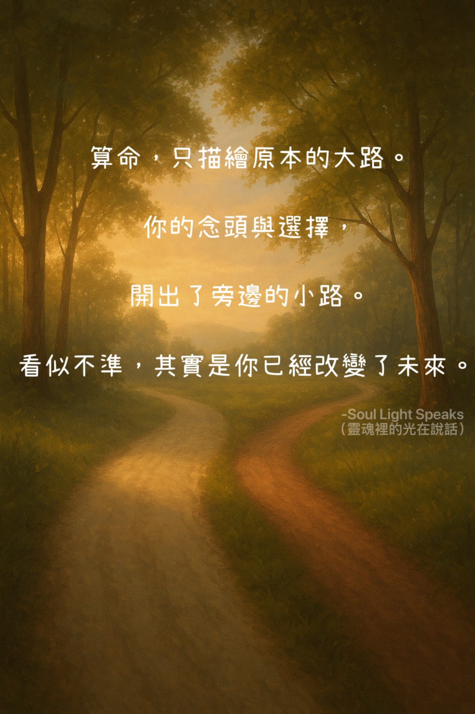

算命，只描繪原本的大路。
你的念頭與選擇，開出了旁邊的小路。
看似不準，其實是你已經改變了未來。
你的念頭與選擇，開出了旁邊的小路。
看似不準，其實是你已經改變了未來。
算命不準，其實不是算命錯了。
算命所看到的，是你當下能量下最可能走的那條「大路」——原本的趨勢、最自然的方向。
但現在的你，因為念頭或選擇，正走在旁邊的「小路」上。
未來因此被改變，看起來算命不準，其實只是你已經改變了自己的路徑。
也就是說，算命準確地描繪了原本的可能，但你的自由意志創造了新的平行未來。